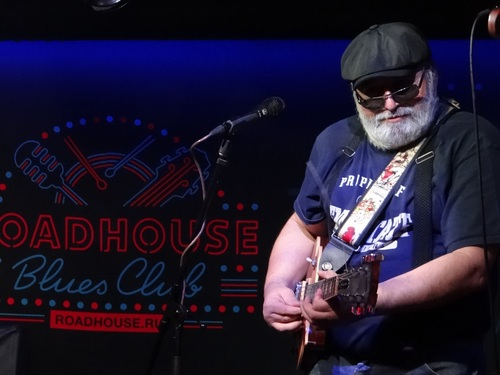
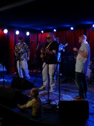
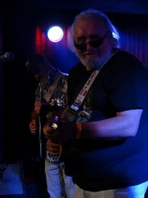
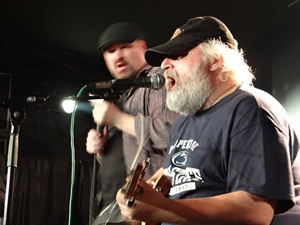
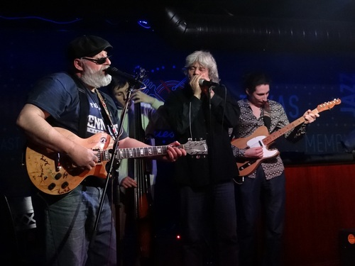
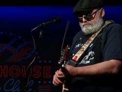
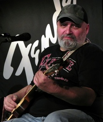
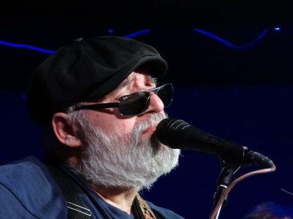

Юрий Каверкининтервью в клубе "Дом у Дороги", ноябрь 2015 г. Андрей Евдокимов: - Ты на московской блюзовой сцене появился, общем, уже не мальчиком. Юрий Каверкин: Уже далеко не мальчиком. - Далеко не мальчиком. А что ты делал до этого? Было это как-то связано с музыкой? - Да, конечно, было связано. Пожалуй, основная связь с музыкой была в том, что было огромное количество друзей-музыкантов, и было огромное стеснение демонстрировать мою игру, музыку. Постольку все мои друзья были довольно крупными музыкантами и всегда относились ко мне так: ну чувак, знаешь, ты хороший парень, но, займись чем-нибудь другим, зачем тебе это нужно? Я начал скромно – я начал играть на бас-гитаре, подумав, что они все на шести струнах играют, а я буду скромнее. Ну вот, некоторое время играл. Я даже в школе играл на бас-гитаре. - Все-таки ты рано начал. Что-то отвлекало от музыки? Конечно. Во-первых, армия. Кстати, армия мне дала Мадди Уотерса, как ни странно. - Каким образом?! А вот случайно ко мне попала кассета, и это был Мадди Уотерс. Все, и Мадди мне снес башку окончательно. Это был 1975 год. - Именно кассета? Да, кассета, не бобина. - Модно. В 1975 году это была новинка, последний писк моды. Кассеты еще не проникли в СССР в массовом порядке. Неужели я путаю? - Нет, я не к тому. Отдельные встречались, но так чтобы массово... У меня кассетник был, как сейчас помню, открывающаяся крышечка. Я сейчас не скажу, какой это был концерт, скорее всего это была сборка. С одной стороны это был Мадди Уотерс, а с другой стороны "Огайо Плеерс", это фанковая группа. Басист Бутси Коллинз, игравший в стиле фанкоделик. Вот оттуда. Естественно, в армии, находишь какую-нибудь гитару, особенно если умеешь зажать пару струн. Естественно, я взял гитару и начал подыгрывать Мадди Уотерсу. Так что я начал работать с Мадди Уотерсом, можно сказать. - И что окружающие по этому поводу думали? Много было таких как ты?  Я был весьма привилегированный человеком - я сам был инструктором. Но недолго, на самом деле очень недолго. Потому что я себя нехорошо вел и был наказан. Потому что там годовой запас спирта был уничтожен и другие нехорошие излишества. Были еще пару ребят, которые любили рок, рок-н-ролл... Поэтому думали, что это все было вполне нормально.- Я не к тому, что тебя там осуждали или не осуждали. Был кто-то, кто разделял твое пристрастие? Ну, я же говорю, пара-тройка людей была, конечно...Медсестры. - Они Мадди Уотерса полюбили?)) Я начинал с Северного какого-нибудь, и плавно перекатывался к Мадди Уотерсу. - Ух ты, он еще и на иностранном умеет - наверное, удивлялись медсестры. Да-да-да, ну как в классическом фильме. - А потом что было?  Потом были семья и основная профессия - я зоолог же. Были экспедиции. В экспедициях тоже гитара.- А в экспедициях? Все вокруг поют "Солнышко мое" или?.. Ну, естественно, я даже слов этих не знаю. Ужас какой-то! - И ты тут один с Мадди Уотерсом. Да, КСП этот, почти как КГБ. Нет, ну не только же Мадди Уотрес. Я к тому времени какие-то рок-н-ролльчики мог сыграть на гитаре, попеть. Ну, естественно, было трудно. А кто сказал, что будет легко продвигать в среднеазиатских пустынях американский блюз? Конечно, нет. А потом было знакомство с доктором Аграновским. - Уже здесь в Москве? Да, я довольно часто приезжал в Москву, в командировки и так, по велению плоти. - Надеюсь, не крайней? - Бескрайней. Как наша страна. Мы с доком были очень популярны среди определенного количества молодых девушек, мы играли на кухнях – никто ничего нового не придумал. Как в фильме "Перекресток" (Crossroads, 1986) помнишь - да с тобой ни одна девка не будет, если ты на губной гармошке не играешь? Ну, в нашем случае это был гитара. - Это речь уже о 80-х годах?  Да, о 80-х.Тогда у нас были посиделки какие-то блюзовые, в основном на квартирах. Хэппенинги они назывались ведь? У Геры Моралеса поигрывали. Потом наши пути с Аграновским разошлись на довольно много лет. Потом опять мы с ним где-то случайно пересеклись, и он говорит: чувак, а у меня вот группа, «Черный хлеб", приходи на концерт. Я пришел на концерт и он мне предложил джемовать. Мне так это понравилось, что через какое-то время я, видимо, ему настолько надоел, что он мне сказал: а может тебе свою группу создать наконец? И так покатилось.- А в какой момент у тебя появилась электрогитара? Как ни странно, она у меня появилась еще когда я учился в школе, классе в восьмом. Я уже тогда был повернут на Beatles, естественно, и Rolling Stones, все эти дела... У кого-то была электрогитара, у меня ее не было. В общем, я уломал папу, папа пошел купил мне электрогитару. Но папа физик-ядерщик, и купил он мне гавайскую гитару – lap steel. - А где ж он ее нашел-то? Продавались такие, да… Она вот такой толщины неимоверной причем такой толщины гриф. Когда он мне принес ее на день рождения, или на новый год, не помню уже, я совершенно обалдевший от счастья, беру эту гитару и понимаю, что я не знаю как вообще на ней играть. Потому что гриф не зажмешь, ну какие аккорды, если он толщиной с подоконник какой-то огромный… В общем, я так расстроился, что папа унес эту гитару и принес мне акустическую Кримону, которую у меня украли через неделю! Вот это была моя первая электрогитара. А так серьезно первая гитара появилась в Москве, да. У меня был Stracotaster, потом появился Les Paul. Я не могу сказать, что я человек, повернутый на инструментах. - Когда по годам у тебя появились эти гитары? Это уже середина 90-х. - Тогда ты уже в Москве был? Тогда я уже перебрался в Москву. - Когда вы джемовали с Аграновским, он, наверное, выбирал песни? Первое время да, но потом я начал учить тексты. Понятно, что сыграть можно было все, но надо было знать тексты. А я в песнях знал или четверть текста, или половину...И я знаю многих музыкантов, которые до сих пор так вполне обходятся...Вот. Теперь я знаю более ста, допустим, блюзов, госпелов. - А как попала к тебе эта кассета Мадди Уотерса? Получается, ты вообще до этого о блюзе ничего не знал? Нет-нет-нет, не так. Тут уже благодаря папе, наверное... Потому что папа абсолютно фанатически увлекался джазом. У него всегда были приемники, которые ловили вражьи голоса - "Voice of America", естественно, Willis Connover «Jazz Hour». С его глубоким голосом. А он вообще маленький чувачок. Вот с этого все началось. Я тогда не делал грани, я даже тогда не знал слова «блюз». Я знал какой-то St. Louis Blues...Поскольку это известный джазовый номер. Вот благодаря этому. А ребята-друзья у меня такие, это был такой конкретный рок, никто ни о каких корнях рока не думал. Откуда он пошел, все это. Первое знакомство с живым настоящим блюзменом - это был 1979 год, Тбилиси. Би Би Кинг в Тбилиси. Я был на всех концертах, что тоже , так сказать, мое психическое состояние не улучшило, после Мадди Уотерса, который снес мне башку... - Почему? не понравилось?) Нет, это не могло не понравиться. Очень многие хлопали из уважения, поскольку это было необычно. Но многие вещи осознаешь потом. Я сейчас вот нашел на ютубе эти записи концертов Би Би Кинга 1979 года в Тбилиси. Это просто обалдеть, какое исполнение! Это совершенно не тот Би Би Кинг, к которому мы привыкли, вот с Эриком Клэптоном, да… - Ну это как это мы привыкли? Мы и другого знаем. Я же не имел ни тебя в виду, ни себя, да? - Насчет хлопали из вежливости, он выступал тогда в Москве в театре Эстрады, его на ура встречали. Правда, тогда его считали джазовым музыкантом. Естественно. Нет, понимаешь, в чем дело, тбилисская публика она очень радушная, и она очень любит такие вещи. Можно сказать, что это западная публика в этом отношении. Что значит из вежливости? Я не имею ввиду из вежливости, типа не понравилось, Нет, но туда приезжали такие музыканты, как Ted Jones, Dee Dee Bridgewater… да фигова туча всех приезжала в Тбилиси - Ну, про остальных я не помню, а Dee Dee Bridgewater приезжала аж в конце 60-х… Ну, наверное, да. - 1969 какой-нибудь  А второй великий блюзмен из первой обоймы был Gatemouth Brown, который приезжал в рамках обмена какими-то культурными делами. И приезжали Nitty Gritty Dirt Band. Гейтмаус поразителый! Как раз в Тбилиси сгорела опера, оперный театр очень старый. Ну, трагедия для города была, потому что им гордились. Его отстроили заново, реконструкция, сделали шикарно все, но началась поголовная антипиромания. Короче, не дай бог ты с сигаретой. Пожарники просто ходили с брандспойнтами. И, представляешь, этот филармонический зал, огромная филармония Тбилисская большая, большой зал, значит, концерт Гейтмауса Брауна, и он выходит с сигариллой на сцену! Как его не залили пеной, не понятно. Там тревога номер один была. Это вот история о том, откуда блюз пришел ко мне. Или откуда я пришел в блюз. - Ты можешь как-то уточнить, а чем тебя так Мадди Уотерс зацепил? ты можешь как-нибудь сказать? Я не знаю, а как можно это сказать? ну разве можно сказать, чем тебя цепляет женщина какая-то? - Иногда можно сказать. по-разному бывает. Ведь блюз - это... Черт его знает, мне всегда казалось, что блюз - это очень сексуальная музыка... Есть какой-то набор звуков.. Есть вот такие какие-то подтяжки на струнах, которые пробуждают совершенно низменные инстинкты… Этим прекрасно пользовался Хендрикс...Не знаю, чем меня зацепил Мадди Уотерс. Может быть, если бы это был Lightnin’ Hopkins, то тоже зацепил бы. Или там John Lee Hooker. Ну, во всяком случае, я перечислил фактически тех музыкантов, которые меня стопроцентно всегда цепляли. Ну еще Howlin’ Wolf добавить и все – вот четыре бога. - Ну. надоел ты Аграновскому и он сказал: почему бы тебе не собрать свою группу... Я собрал первую группу "Wrong Way Band". Со мной играл очень интересный состав. Постольку поскольку на бас-гитаре играл зам. директора Московского зоопарка, в котором я жил и работал. - Когда-нибудь будет такая табличка "Жил и работал.." Да-да-да-да… А на барабанах играл очень странный американец Фил Пагнотти, которого ты знаешь. Это была первая группа. потом она трансформировалась в «Dirty Dozen». Я очень расстроился, узнав, что существует «Dirty Dozen Brass Band»... Но ничего страшного. одних Битлз сотни, наверное. Потом Nohing personal. У меня никогда было стабильного состава. Никогда. - И ты за это не очень держался Я не очень держался за это в связи с тем, что у меня всегда была другая специальность. И музыка была для меня все-таки больше удовольствием, чем бизнесом. Со временем жизнь поменялась, и музыка стала для меня, конечно, еще и источником – каким-то, да - источником дохода. Но я придумал себе интересную фишку - я вообще отказался от постоянных составов. Каждый концерт я набираю разных музыкантов. Это интересно. Да, порой это бывает коряво, порой бывает это грязно… Но, опять же, мы шутили так - да, мы играем грязно! Но это лечебная грязь! Хотя на самом деле, ты понимаешь, дело в чем? Мне всегда везет. Зачастую я бываю слабым звеном в том составе, который я набираю, потому что музыканты очень хороши, и всегда бывают приятно на кого-то опереться... Я понимаю: на сцене ты шутишь в основном. Можешь позволить себе... Главное, обаятельно улыбаться, когда фальшивишь... Но говорят, что я очень редко фальшивлю. - Ты считаешь, что публика не заметит? Нет, но всегда можно обернуться… Если вот допустим, на гитаре бывает, когда я киксую, быстрые движения по грифу они все это как - то нивелируют... В основном, чем говоря, не замечают. Ведь это очень четкая граница - сцена и зал. Вот то, что ты слышишь на сцене - очень часто в зале просто никто не обращает на это внимания. - Главное, если ты киксанешь, не делаешь испуганный взгляд в зал.  Нет, этого не надо делать. Я знаю очень музыкантов, которые весь концерт могут отыграть с испуганным взглядом. Но знаешь, в чем ужас? Ну, не ужас, а неприятно - когда ты уходишь со своей территории, переходишь границу, садишься туда. Ты слушаешь и думаешь – гос-по-ди! Неужели я тоже так делаю? Да! Конечно, я тоже так делаю. Но для того чтобы, это слышать, надо быть, все-таки, музыкантом. Публика, она все-таки, по-другому это слушает. Да, конечно, есть уникальные люди, которые слышат мгновенно любую фальшь.- Уж коли ты затронул эту тему, мне кажется, что за последнее время даже среднестатистический уровень исполнения вырос просто на голову по сравнению с тем, что было в 90-е. Это вообще небо и земля. Да, конечно! Но ты понимаешь, в чем дело? Знаешь, что пропало? Пропали стили. Всеядность пошла, к сожалению. Вот мы говорим о блюзе. И я могу тебе назвать только одну блюзовую команду, это тот же доктор Аграновский, который изначально был привержен жанру и он продолжает играть. - Петрович играет блюз. Он иногда позволяет своим….сыграть джаз. но сам-то он гнет исключительно блюз. Да! Но зато очень много групп, которые имеют в своих названиях слово блюз, при этом достаточно всеядны. Хотя, надо посмотреть, появились новые молодые группы, например Crossed Yeyd Cats...вроде бы они там по блюзу - Во-первых, они не молодые… Нет, я имею в виду, молодые на сцене. - Блюза там мало. Я не слышал. - Я их слушал специально… Вот Миша Кистанов играет блюз. Подожди, а Мишуриса ты не назовешь что ли? Мишурис? Ну, наверное да. Понимаешь, все-таки блюз для меня - это другое. - Ну тогда скажи, что именно? Вот, допустим, Дюк Робиллар для меня не блюз. Это музыкант, это стиль. Вот джамп-блюз, для меня это не блюз. А вот, допустим, тот же R.L. Burnside - вначале это был блюз, потом это не понятно что. Но там, видимо, изначально настолько много было блюза, что даже это «непонятно что» - оно «непонятно что», но все равно блюз! - Ну, «непонятно что» - это вместе с Jon Spencer Blues Explosion… Естественно. Коммерция. Но это клево! - Один вопрос, который я всем задаю. Ты выступаешь не перед англоговорящей аудиторией. Ты чувствуешь, что язык как-то разделяет? Ты знаешь, я не задумываюсь над этим. Я не задумываюсь, потому что, когда я исполняю, я ухожу. Я мало смотрю. Знаешь, меня напрягало первое время сознание того, что в зале есть англоговорящие люди. потому что это ответственность и не хочется быть, понимаешь, таким наглым фраером, который что-то несет от себя, лепит фигню... - Корневые блюзмены - они тоже грамотностью языка не могли похвастаться. Но они были корневые! А мы, мало того, что не корневые, так… У Blind Willie Johnson я не понимаю половины слов. У Joe Williams я не понимаю многих слов. Он глотает половину. Lightnin’ Hopkins не выговаривает половины. Лайтнинг Хопкинс иногда переходит на скороговорку, и там фиг поймешь что-то. И потом смысловая нагрузка - многие фразы, оказывается, значат совсем не то, что ты слышишь. - Но ты же у нас один из немногих, кто сам сочиняет песни, причем на языке. Ну, сколько я там чего сочинил?.. Десяток. Ну, понимаешь, И мои тексты настолько примитивны и легки, что каждый дурак их сочинил бы. Ну, а что там такого? - Не знаю, про «Джорджию» очень красиво. Ну, «Джорджия» это не блюз. - Бывает так, что блюзмены поют не блюз, а все равно блюз получается. «Джорджия» («Грузия») - это, пожалуй, единственное, чем я могу не то, чтобы гордиться... Но все же!.. Хотя я все время жду, что кто-то придет и скажет: чувак, а что ты там стырил? - Я ж тебе рассказывал, что я видел однажды девиц, которые на твоем концерте подпевали «Джорджии». Причем не так, чтобы одно слово, а целые строчки.  Да…Но, ты знаешь, иногда публика реагирует так, что ты начинаешь думать, что ты и правда «о!» Начинаешь думать - о, ни фига себе, какой я крутой-то, оказывается. Начинаешь ее играть - вдруг люди начинают хлопать. Не знаю, может я морду такую делаю? (смех)- Возникает нечто, что называется "контакт"… Смешно. «Джорджия» была написала минут за двадцать. - Так всегда при озарении случается. И моя бывшая жена мне сказала - я бы никогда не подумала, что ты ТАК тоскуешь. Я тоскую, да, конечно. Но мне, к сожалению, там делать нечего. И потом, ребенок здесь. - Обычная блюзовая история. Люди приезжают с юга, а тоска по родине остается. Андрей, хочешь верь, а хочешь, нет. Я всегда говорю: я очень люблю играть блюз, но ненавижу жить в блюзе. А получается , что я живу в блюзе, потому что у меня весь классический набор. Сейчас еще нога прибавилась. Дома нет, работы нет… При этом сохраняю упитанность. - Но, заметь, начал ты играть блюз, когда и работа была, и... Но, видимо, я чувствовал, что так будет… Одно преимущество, сейчас вот разрешили на улицах играть, если уж совсем плохо станет. В 1метро разрешили играть, в переходах. с 1 января. - Ты готовишься прямо! А что делать? Жизнь такая. Ты ж сам говорил, откуда нам знать, что будет? - Ты хотел бы что-то рассказать, что ты думаешь про сегодняшнюю московскую блюзовую сцену? Я ничего не могу сказать про нее. Абсолютно. Есть люди, которые мне очень нравятся, есть люди, которые не трогают. Ну как обычно, эти не трогают, эти нравятся. Есть, безусловно, абсолютно уникальные музыканты. Вот Юра Новгородский, это для меня такой совершенно открытие. И мне очень приятно! Поскольку я его помню еще когда он приходил в "Вудсток" маленьким толстеньким мальчиком в очках. И я тогда говорил Леше Аграновскому – посмотри на этого чувака - вот он делает. Видно было сразу. Очень многие изменились и стали играть. Конечно, люди играют, занимаются. Тот же Паша Семилетков – как начал играть хорошо. Конечно, ты абсолютно прав, что за десять лет уровень вырос. Но! Понимаешь, как? Уровень вырос, а блюз вырос или нет – я не знаю. Меня пугает, допустим, современный вокал блюзовый, очень часто. У меня такое впечатление, что люди не понимают, о чем они поют. Они стараются демонстрировать свои вокальные данные. Ведь та же Бесси Смит, она ими просто обладала, и она не могла по-другому преподносить свои песни. Я все время думал, что блюзы очень примитивные. А вот ни хрена! - Там хорошая поэзия встречается. Очень хорошая. Причем даже самые простые…Вот эта удивительная такая спайка чувства и слова, я думаю это романсы и блюзы такие. Даже не блатняк, хотя очень похоже. Даже в веселых блюзах иногда тоска, очень часто. - По-моему, обязательно. И, наоборот, в тоскливых всегда найдется какое-нибудь место для подколки. Подкол, да, это святое! Все эти иносказания, подмена какая-то... - I feel so good I could die. Да-да-да. А это: «Когда я умру, закопайте меня задницей кверху, чтобы легче было целовать ее?» Я забыл. Старый блюзмен, еще 30-е годы, ну такой, ну у него все вещи – «Suck my lemon», «Сунуть карандаш в точилку твою». Я тебе найду, Ishman Bracey по-моему… Ooopssss!!!!! Скабрезные блюзы исполнял Bo Carter!!!!! Ну и Blind Boy Fuller этим баловался. Я многое на ютубе нашел. И все, что я нашел, все связано с сексом. Абсолютно. - Ты говоришь, вот они поют и не понимают, про что. Я помню времена, когда все были гитаристами, а петь никто не умел..Поэтому мне вроде как легче вздохнулось: теперь – появились какие-то вокалисты. Ну, может быть, по части артистичности не хватает, выразительности… Нет, конечно есть. Конечно, я могу назвать певцов – да, Мишурис, безусловно, певец! - Он таким и приехал, только он стал намного лучше. Приехал уже готовым. Блюзом он и занимался. Ты знаешь, вот Володя Русинов, скажем честно, пел-то тяжело. А сейчас, смотри, начал петь. И вот на последнем джеме, молодая девочка Аня, ну так, скажу я тебе честно, она, конечно, гуляет по соседям, причем она выбирает сложные какие-то вещи. А тут она спела Mercedes-Benz. Я сидел с открытым ртом. Она спела нота в ноту, не то, что она скопировала, но она правда спела. Потом она взяла вот этого, как его, Скримин Джея Хоукинса I Put a Spell on You. И тут я зажался, ну думаю, сейчас она как даст мимо! Нет, правильно спела. Вот тебе, пожалуйста, да? Вот тебе, пожалуйста. Ты знаешь, я скуп на комплименты, особенно женщинам в этом отношении. Я могу по поводу другого сказать. Но тут я подошел и сказал: респект. Просто респект. Потому что я бы не спел эту вещь, правда, наверное, сразу. Хотя, может она тоже не сразу. Но в то же время, они, знаешь, иногда, так удивительны. Знаешь, они часто лажают на самых простых вещах. Хотя, может потому, что она простая, и тем она сложна. - На наших сценах не всегда ты сам себя услышишь. Ну слава Богу, у нас хоть и репертуар стал разнообразнее, Я вот смотрю там, люди стараются, играют малоизвестные вещи какие-то, не сплошные хучи хучи мен и «Мэри имела овечку» - скотоложество какое-то. Ну, опять же, я говорю, ну, всеядность. Один и тот же человек, он может исполнять.. Почему я так говорю? Потому что я сам так делаю. И это нехорошо, потому что я могу …ну, понятно, что я не исполняю там какие-то баллады. Хотя, вот та же «Джорджия», я считаю, что она абсолютно выбивается. Ну, люди любят, чтоб я ее спел. А так да, наверное, Петрович, Мишурис, Аграновский- это вот приверженцы стиля, наперсники разврата. А так иногда настолько поражает – туда, сюда…Ну, опять же, на угоду публике, да? - Что касается гитары, ты вообще самоучка? Да, абсолютно. - И как ты учился? На слух, само пришло? Когда я впервые взял гитару, как раз чтоб подыграть Мадди Уотерсу, я понял, что это может каждый идиот, сделать судя по тому, что у меня начало что-то получаться. Но это очень сложно. И потом, ты же знаешь, что я не гитарист. Для меня гитара это как вот палочка, да? Я пробовал петь без гитары, но у меня не получается. Мне нужно вот что-то держать. Вот баба в руках должна быть. Она же недаром такой формы. Не могу понять гитаристов, которые на флайе играют, какое-то извращение. - Ну, Алберт Кинг тебя бы не понял… Я понимаю… Но. Может, ему такие нравились? - А эта гитара откуда взялась? А эту гитару мне подарили в Нью-Йорке, не знаю, это байка, скорее всего. Ее украли у какого-то музыканта в Нью-Йорке. А у меня там товарищ, который коллекционирует гитары, у него группа есть своя. А я все время приезжал, у меня с ним был общий бизнес, связанный с животными. Он там занимался террариумными животными, я ему привозил в подарок каких-то животных, он мне. И как-то мы очень семьями сблизились. - Сблюзились. Да, сблюзились. Сблюжение, хорошая фраза. Ставь копирайт. - И как ваше сблюжение перешло в эту гитару? Я один раз приехал, а они как раз переехали из Нью-Йорка под Нью-Йорк, у них был собственный дом там. Ну, он очень состоятельный человек. У них такой гостевой домик. Они меня туда селят. Первое, что я вижу, когда туда захожу – стоит кофр, жесткий, старый, битый-перебитый, стоит битый-перебитый комбик Fender. «Вот я тебе тут инструменты поставил, пока поиграй». А я видел у него коллекцию гитар, там много гитар хороших. В общем, я открываю и вижу этот Les Paul. Я его беру и понимаю, что вот эта тварь, которая меня сгубила. Ну я там месяц как раз целый жил, и мы там джемовали. А когда я уже уезжал, они с женой мне вот просто сказали, что они хотят мне ее подарить. Я начал, естественно, сначала отказываться. Даже позвонил проконсультироваться там бывшей жены брат – брать не брать, она говорит – конечно, нельзя. Я говорю – ах, сволочь ты какая! И ты туда же! А потом я допустил ошибку. Я столько отказывался, что они сказали – ну ладно, не хочешь – не надо. И я тут же спросил - а кофр можно будет забрать? Они сказали, что даже комбик. Но комбик был тяжелый. Потом он мне подарил вторую, еще гибсон один. Двенадцатиструнную старую акустику, но, к сожалению, ее надо ремонтировать. - Никогда не видел тебя с акустикой на сцене. Не, я играл очень часто, я приносил акустику. Ну вот, эта гитара, вот я могу сказать - точно мой инструмент. Но я очень люблю ее давать поиграть хорошим музыкантам, и сесть послушать. Потому что я так не могу, я не могу показать все, что она может. - Ну и как, тебе нравится то, что она может? Да, у нее после этого струны рвутся, это она мне - типа не отдавай меня в чужие руки. - Она у тебя еще и расписана. Ну это так, это по пьяни. Ну как, по пьяни, да. Первый расписался Джон Праймер. А потом я думаю – что такая одинокая подпись? И начали. И набрался такой, знаешь, чуть не сказал «пантеон». А Гия хорошо Дзагнидзе по этому поводу сказал: а почему моей подписи нету? Она есть сейчас. Я говорю: Гия, я тебе хорошее место найду. Он говорит: что, кладбище, что ли? Ну там все достойные гитаристы расписались, ну там есть Dave Hole, Walter Traut, Eddie C. Campbell… Там многие руки приложили. В смысле расписывались. И играли, да, тоже. - Луизиане Редy ты не давал ee? Луизиане Редy нет, не давал. Зато я же джемовал с Луизианой. У меня даже есть фотография, где я выгляжу как кролик испуганный. С гитарой. И вот так смотрю, идиотское выражение. - Редкий человек напугает Каверкина до состояния кролика... Ну это не испуг был, ну, знаешь, это благоговение такое. Нет, слава Богу, я джемовал с многими хорошими известными музыкантами, спасибо Омару. Он почему-то свято верил, что именно я должен играть с ними блюзы, потому что свято верил, что я один из немногих, кто играет. Ну, не знаю. Знаешь что, не буду излишне скромным – наверное, это так. - Ну а какие-то особенно памятные есть моменты джемования с блюзменами импортными Ты знаешь, на самом деле это все настолько страшно, ну, как страшно, это настолько…ну как будто это не ты. И ты ни хрена не запоминаешь, с кем тебе было там… - Видимо, состояние Наташи ростовой на первом балу? Ну да. Это то же самое, что как лечь в постель к какой-нибудь киноактрисе и потом тебя спросят - ну как было? А я не помню, не знаю, мы про кино говорили! - Спасибо, что-то еще хочешь добавить? Дай бог всем здоровья, всех благ. Передать привет всем, кто меня любит.. - 40 минут. Мы молодцы. Попиздеть-то мы горазды.  Расшифровка Л.Деевой |